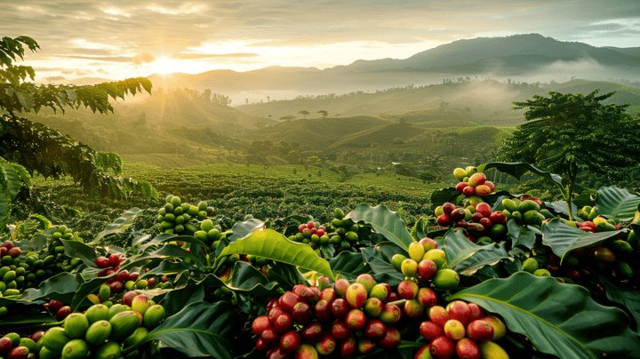
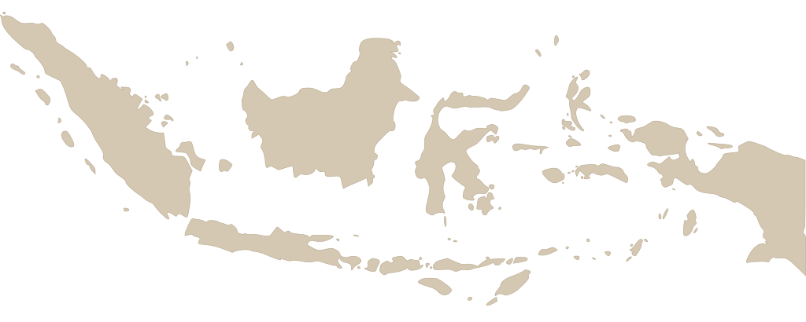

Gilingan sedang-halus (garam dapur). Tuang 3 kali berat kopi untuk blooming selama 40 detik, lalu tuang sisa air dalam dua putaran stabil.
Gilingan sedang-halus. Tuang air, aduk 4 kali, diamkan hingga 1 menit 30 detik, lalu tekan perlahan selama 30 detik.
Gilingan halus. Ratakan bubuk kopi, padatkan dengan tamper secara sejajar, dan targetkan rasio hasil 1:2.
Ikuti sesi cicip terpandu selama 45 menit di bar sangrai Kala.
